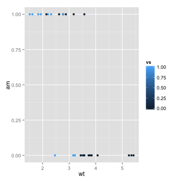

Verbatim Chunks in R Markdown
2014-03-12One of the things I have always wanted to do is to be able to print code chunks verbatim, along with the chunk markup. This is especially useful while writing tutorials, where I want the user to see the code chunk "asis".
Initially, I thought that I could achieve this by indenting the code chunk, thereby "fooling" knitr into believing that it is not a code chunk, and thereby printing it verbatim in a <code> block. But I was terribly mistaken. Apparently, knitr is too smart to be fooled, and no matter how deep you tuck away or indent the chunk, knitr always finds it and executes it!
Digging a little deeper, I found an example from the author in his knitr-examples repo. The basic idea was to write a chunk hook that wraps the source code with the markup. It makes use of the option params.src that contains the chunk options that are set locally.
knit_hooks$set(wrapper = function(before, options, envir) {
if (before) {
sprintf(' ```{r %s}\n', options$params.src)
} else ' ```\n'
})
Let us test it out by adding wrapper = TRUE to a code chunk.
```{r test_label, wrapper=TRUE, eval=FALSE}
1+1
plot(1)
```
It works! Well, it almost works. I say almost, because I don't like how it splits the code and the chunk markup into different blocks. I am sure that I can clean this up using some regex-fu, but I wanted to explore a cleaner solution using hooks.
After a lot of experimentation, I ended up with the following hook. Note that my implementation involves a source hook and not a chunk hook, like the one proposed by Yihui. It is customized for Rmd documents, but is easy to extend for other formats like Rnw.
knit_hooks$set(source = function(x, options){
if (!is.null(options$verbatim) && options$verbatim){
opts = gsub(",\\s*verbatim\\s*=\\s*TRUE\\s*", "", options$params.src)
bef = sprintf('\n\n ```{r %s}\n', opts, "\n")
stringr::str_c(
bef,
knitr:::indent_block(paste(x, collapse = '\n'), " "),
"\n ```\n"
)
} else {
stringr::str_c("\n\n```", tolower(options$engine), "\n",
paste(x, collapse = '\n'), "\n```\n\n"
)
}
})
Let us now test how this hook performs.
```{r qplot, fig.width = 5, fig.height = 5, fig.align = "center"}
library(ggplot2)
qplot(wt, am, color = vs, data = mtcars)
```

Yeyy! It works exactly like how I wanted it to. As always, this post is fully reproducible, and you can find the code here.